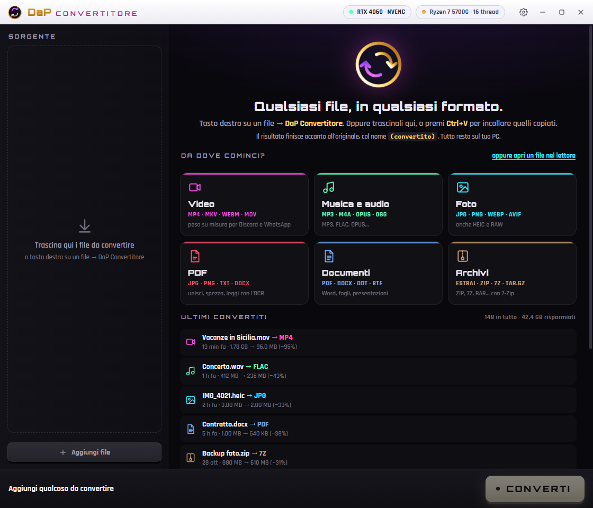
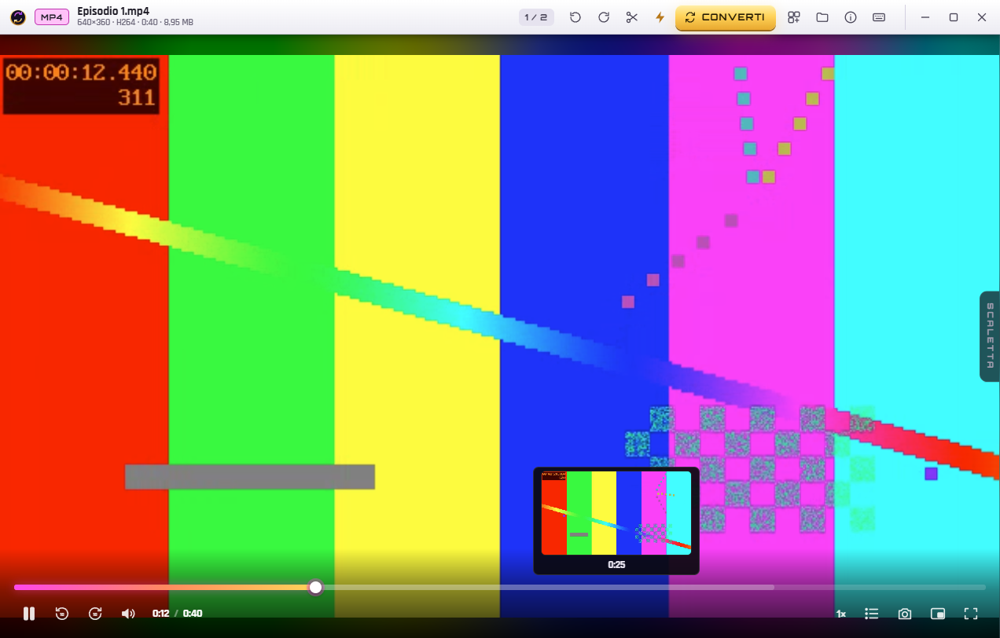
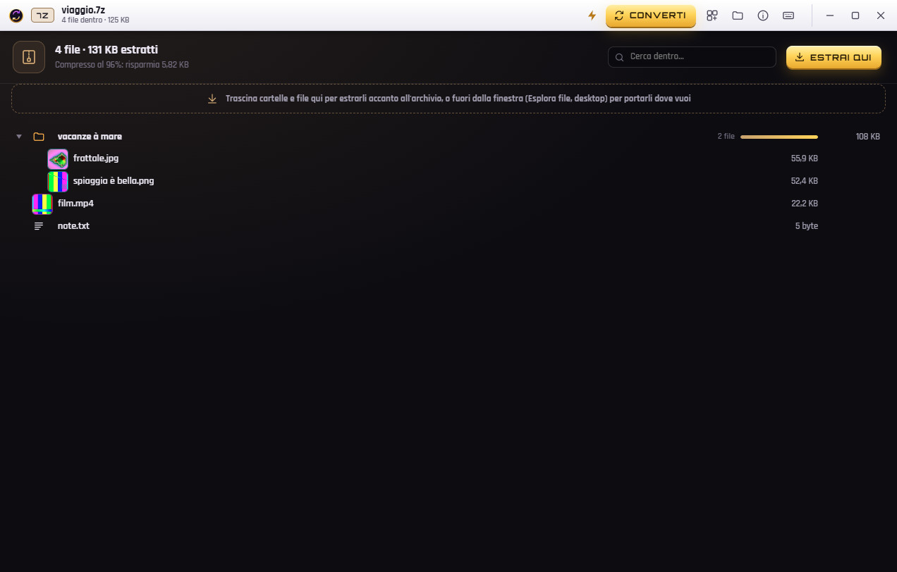
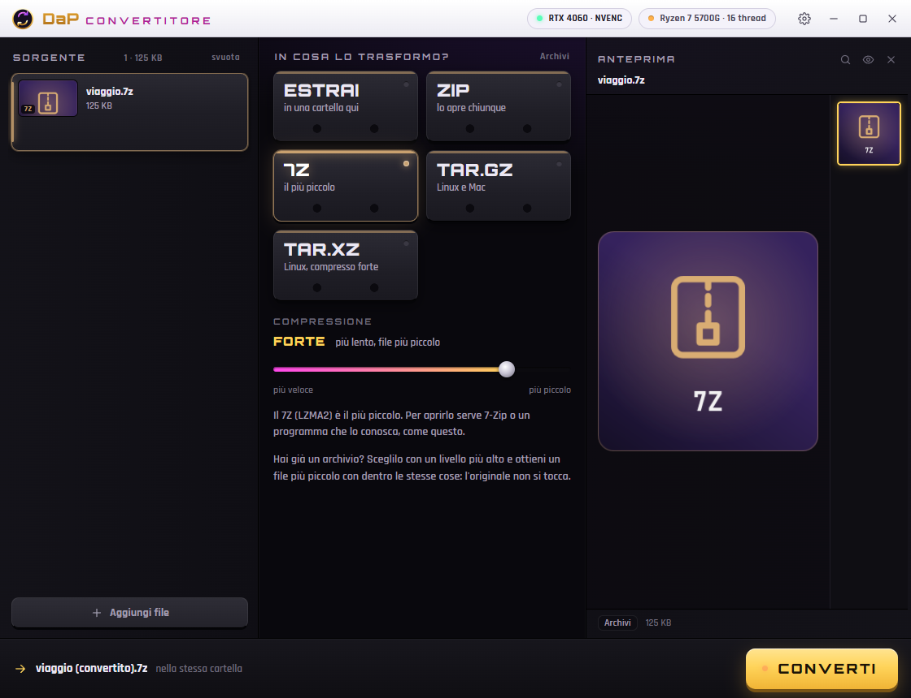
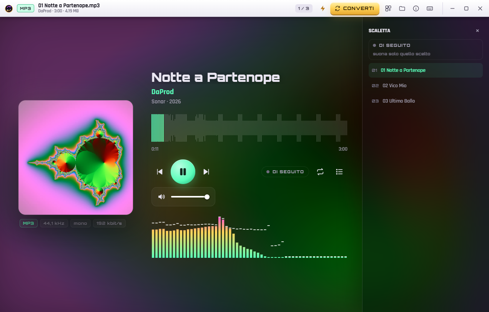
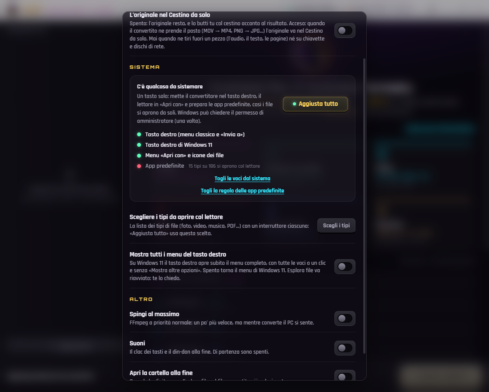
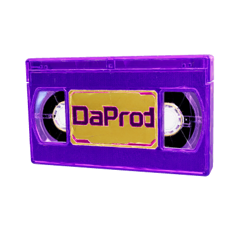
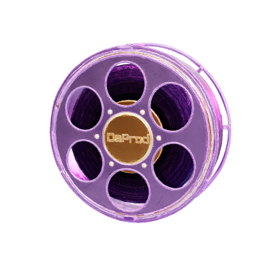
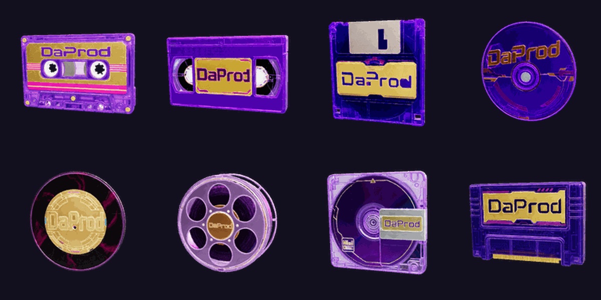

TASTO DESTRO. FATTO.
Clicchi su un file, scegli il formato, e il file nuovo compare accanto all'originale. Video, audio, foto, PDF, documenti e archivi: tutto sul tuo PC, senza account e senza cloud.
Si installa solo per il tuo utente, senza amministratore, e si aggiorna da solo.
Guardalo all'opera
Scorri di lato: la home, il lettore con l'anteprima che segue il cursore, gli archivi con le miniature e lo slider della compressione.






Cosa sa fare
Un programma solo al posto di cinque, e ci arrivi dal tasto destro.
Dal tasto destro
Su qualsiasi file: scegli il formato e il risultato sta accanto all'originale come «nome (convertito)». Anche su tanti file insieme.
Video e audio
MP4, MKV, WEBM, GIF, MP3, FLAC, OPUS… con uno slider per il peso finale. Sfrutta la scheda video NVIDIA (NVENC, anche AV1).
Foto
HEIC dell'iPhone, RAW, WEBP, AVIF, JXL, ICO, PDF. Anche qui scegli il peso e vedi la stima prima di convertire.
PDF e documenti
PDF in foto o testo (anche le scansioni, con l'OCR), unisci PDF, Word, Excel e PowerPoint da e verso PDF.
Archivi con 7-Zip
Apri e sfoglia 7Z, ZIP, RAR, TAR…; crea 7Z e ZIP con la password che vuoi. Le voci si trascinano fuori come da una cartella.
Un lettore per tutto
Foto, video, musica, PDF, testi e codice si aprono con un doppio clic, con anteprima, scaletta e ricerca.
Il tuo avatar sul desktop
Una musicassetta DaProd che sta in un angolo e ogni tanto si trasforma in un VHS, un floppy, un CD, un vinile…
- Ci trascini sopra un file: lo apre, lo converte o lo comprime.
- La musica parte subito, con il suo piccolo player.
- Con la rotella lo fai grande o piccolo.
- Sta fermo quando guardi un video o giochi a schermo intero.



Com'è fatto
Niente scorciatoie: ogni conversione la fa un motore vero, installato dentro il programma.
Il motore
Scritto in .NET 10, senza finestre. Un solo catalogo dice cosa si converte in cosa: lo leggono l'interfaccia, il menu del tasto destro e le prove. Per i video c'è FFmpeg, per gli archivi 7-Zip, per le foto il motore immagini di Windows.
L'interfaccia
Una finestra WPF con dentro WebView2 (il motore di Edge) e una pagina in TypeScript, nello stile DaProd: viola notte, oro e magenta. È vetro, è fluida, e funziona senza internet.
Il menu di Windows 11
Una piccola libreria in C++ mette DaP Convertitore nel menu del tasto destro nuovo, non solo in quello «Mostra altre opzioni». Con «Aggiusta tutto» sistemi anche le app predefinite.
Come viene sviluppato
Ogni versione ha una voce nel registro delle novità e oltre 170 prove automatiche che convertono file veri. Quando una versione è pronta, una pipeline compila, impacchetta con Velopack e pubblica da sola.
L'avatar
Gli oggetti sono modelli 3D creati con Meshy e fotografati in animazione: nel programma ci sono solo le immagini, quindi pesa poco e funziona offline.
Aperto e senza spie
Il codice è su GitHub con licenza MIT. Non manda niente da nessuna parte: i tuoi file restano sul tuo computer.
Informazioni
- Versione
- 2.2.4
- Sviluppatore
- DaProd Produzioni
- Sistema
- Windows 10 e 11 (64 bit)
- Lingua
- Italiano
- Prezzo
- Gratis
- Licenza
- MIT
- Linux · macOS
- In arrivo
Prima di installare
1. Scarica «Scarica per Windows» e aprilo: si installa da solo.
2. Windows può dire «ha protetto il PC», perché l'installatore non ha ancora la firma a pagamento: premi Ulteriori informazioni → Esegui comunque.
3. Tasto destro su un file → DaP Convertitore.
Provalo, ci vuole un minuto
Gratis, offline, e il primo file lo converti con due clic.